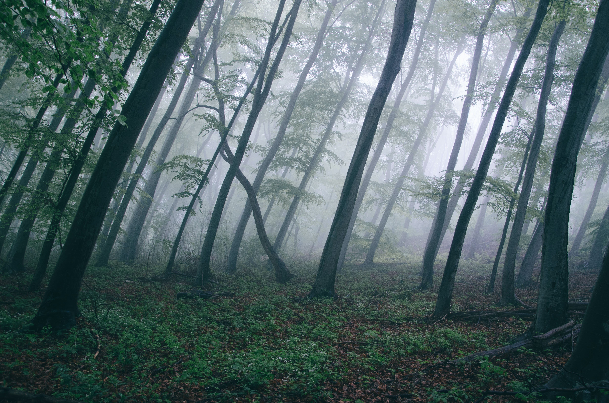

We believe that climate-tech startups have the power to make a
significant positive social impact on a large scale. We want to help
these startups get on their feet, faster. That's why we're investing
€50.000 in a startup fund, providing promising pioneers with the tools
they need to push their mission further.
WHO'S BEHIND THIS?
GRRR is a creative digital agency for Meaningful Matters. We strive to
make the world cleaner, fairer and more colourful, and have been
working towards this mission for over 20 years now. We were the first
Dutch digital creative agency with a B-Corp certificate, and our focus
on impact strategy, inclusive design and ethical tech has been
recognised with 33 international awards and nominations. Seeing our
work realised in the success of companies like The Ocean Cleanup (with
xx result), Fastned (with xx result) and SkyNRG (with xx result) is
what keeps us going.
WHAT'S THE FUND
The startup fund was born from our mission: helping all organisations
become more meaningful, regardless of where they're at on their impact
journey. We took this one step further and pledged to fund
climate-tech startups that deserve quality but can't afford it (yet).
Good design for a better planet?
Design goes beyond what looks nice. It's your brand's personality; how
it looks, talks, reacts and interacts with people. Good design can
make a brand easier to understand, to use, more memorable and more
accessible. It gets your mission across and your message out there.
That's why we're funding climate-tech startups; we want to give them
the power to stand out, to make even more impact, to be even more
successful, and ultimately, to build towards a more sustainable
future.
HOW IT WORKS
You'll enter the brand-pressure-cooker, a fast-paced brand immersion,
together with our team of brand identity experts. We'll guide you
through the process of (re)defining your mission and messaging,
followed by visualising your brand, over the following four phases:
- Phase One: Brand Strategy
- Phase Two: Visual Identity
-
Phase Three: Communication Tools (pitch deck, storyline, tone of
voice guidelines)
- Phase Four: One page Website
At the end of the process you'll be armed with a clear mission,
messaging and a design arsenal tailored for results.
WHO'S ELIGIBLE?
Applications are open to climate-tech companies who are on the early
stage of their startup journey. Applicants will be assessed based on
the questions answered in the application form, but must also be able
to:
- Provide input and feedback
- Be available to invest time in the process
- Be agile and willing to work under high pressure
We'd like to ensure the fund applicant is chosen fairly and
accurately. GRRR will form a small, confidential panel to review the
applications. If there is no clear candidate, GRRR reserves the right
to either extend the deadline or postpone the fund until there is a
suitable applicant. All work submitted will remain confidential and
not disclosed to third parties.